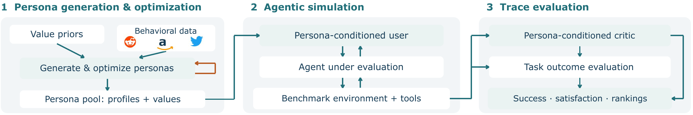
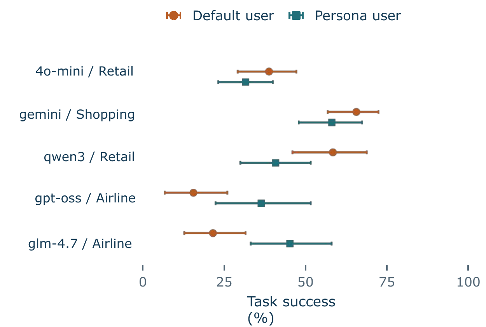

BayLearn 2026 · Poster
Agent benchmarks report task success against a single, fixed user simulator. Real users differ in tone, patience, tolerance for policy friction, and escalation behavior, so a model that tops a leaderboard against one simulated user can behave inconsistently across user groups.
We run a controlled comparison: tasks, tools, initial state and reward stay fixed, and only the simulated user changes. Users are instantiated from personas grounded in real behavioral data (Reddit post histories and Amazon reviews) combined with value priors from the Schwartz Theory of Basic Human Values, then refined with prompt optimization (GEPA). For every rollout we measure verifiable task success and cumulative user satisfaction, estimated by a persona-conditioned critic.
Persona variation shifts task success and satisfaction, reorders model rankings, and surfaces failure modes that a fixed-prompt simulator never elicits, both in the agent and in the evaluation harness itself.

Value priors and behavioral data (Reddit, Amazon reviews) are turned into structured personas: communication style, interaction policy, and state-transition rules. GEPA optimizes the generation prompt for fidelity to the source user.
A persona-conditioned user simulator talks to the agent under evaluation inside the unchanged benchmark environment and tools. The simulator reasons in a private inner monologue before each reply.
Task success comes from the benchmark's own state check. Satisfaction is the sum of critic-rated, turn-level valence changes, each on a −4 to +4 scale.
User variation shifts model scores and rankings.
Kendall's τ between model orderings under the default and the persona user. τ = +1 means unchanged ordering; τ = 0 means half the model pairs swap.
| Task success | Cum. satisfaction | ||
|---|---|---|---|
| STATE-Bench | Travel | +0.80 | +0.80 |
| Customer support | +0.20 | +0.00 | |
| Shopping | +0.40 | −0.40 | |
| τ²-bench | Telecom | +1.00 | +1.00 |
| Airline | +0.60 | +0.20 | |
| Retail | +0.70 | +1.00 |
7 of 10 model pairs reverse for shopping satisfaction (τ = −0.40).

Each model is shown on the domain where its success rate changed most. Bars are 95% bootstrap intervals. Changes go both ways: gpt-oss and glm-4.7 do better on airline with persona users, while qwen3 drops on retail.
Persona users surface failures in five groups, some caused by the agent and some by the evaluation harness itself.
Real rollouts from our runs, picked from a hand-verified set of failures. Click a row to read the full conversation. User turns show the persona simulator's visible reply; open "inner monologue" to see its private reasoning.
| # | Failure | Type | Benchmark · domain | Agent |
|---|
Each persona is a structured profile: how the user writes, how they react to friction, and when they give up.
Personas are shown anonymized. They are generated profiles, not the source users.
We'd love to hear from you. Email jbheeman@ucsc.edu.
Takeaway: evaluate across users, report success and satisfaction, and audit both agent and harness failures.